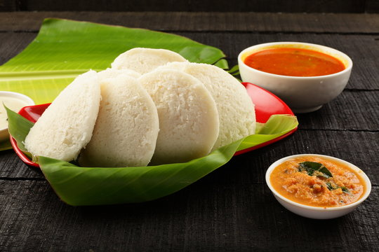

Home
Idli

Description
Idli is a soft and fluffy South Indian dish made from fermented rice and urad dal batter. It is steamed, healthy, and usually served with chutney and sambhar.
Ingredients
- 1 cup parboiled rice
- 1/4 cup urad dal (split black gram)
- 1/2 teaspoon fenugreek seeds
- Salt to taste
- Water as needed
Steps
- Rinse the rice and urad dal separately and soak them in water for at least 4 hours or overnight. Add fenugreek seeds to the urad dal while soaking.
- Drain the soaked rice and urad dal. Grind the urad dal with fenugreek seeds to a smooth batter, adding water as needed. Grind the rice to a slightly coarse batter.
- Mix both batters together in a large bowl, add salt, and cover it. Let it ferment in a warm place for 8-12 hours or until it doubles in size.
- After fermentation, gently stir the batter. Grease the idli molds and pour the batter into them.
- Steam the idlis in a steamer or pressure cooker (without the weight) for about 10-15 minutes or until a toothpick inserted comes out clean.
- Remove the idlis from the molds and serve hot with chutney and sambhar.